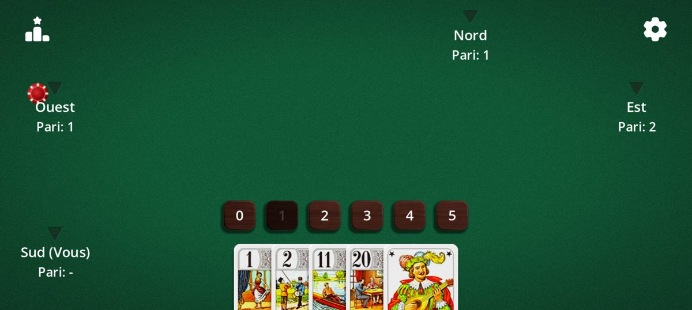
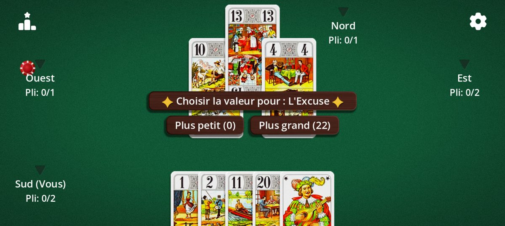
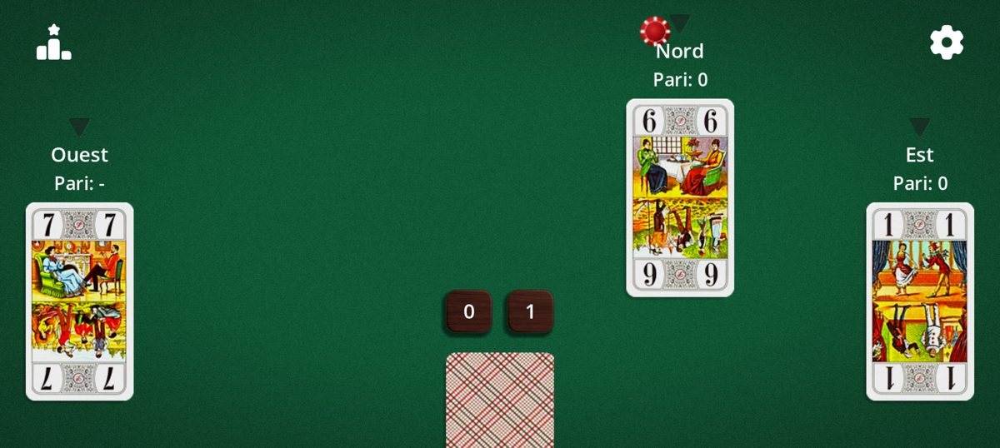

Un jeu de plis où l'on ne gagne pas en prenant le plus de plis, mais en prédisant juste. 22 cartes, 3 à 5 joueurs, des parties rapides.
Le Tarot Africain est aussi connu sous le nom de Whist 22. C'est un cousin de l'ascenseur (Oh Hell en anglais), joué avec les 22 atouts du tarot. La manche « à la mexicaine » est aussi appelée Tarot mexicain.
Les cartes
Le Tarot Africain se joue avec seulement 22 cartes : les 21 atouts, numérotés de 1 à 21, et l'Excuse. Il n'y a pas de couleurs : seule la valeur de la carte compte pour remporter le pli.
Carte
Valeur
Atouts 1 à 21
Leur propre numéro (21 = le plus fort, hors Excuse)
L'Excuse
0 ou 22, au choix du joueur qui la joue
Le 1, le 21 et l'Excuse sont traditionnellement les cartes les plus précieuses : jouez-les au bon moment et surveillez-les chez vos adversaires.
But du jeu
À chaque manche, vous annoncez le nombre de plis que vous pensez remporter. Votre objectif : en remporter exactement ce nombre. Réussir votre pari vous préserve ; le rater vous coûte des vies, d'autant plus que l'écart est grand.
La partie s'arrête dès qu'il ne reste qu'un seul joueur avec des vies. Vous pouvez aussi fixer un nombre de donnes limité.
Les annonces
Avant chaque manche, chaque joueur annonce à son tour un nombre de plis, entre 0 et 5. Impossible de passer.
Par défaut, le dernier à annoncer ne peut pas choisir le nombre qui rendrait la somme des annonces égale au nombre de plis : il y a donc toujours au moins un perdant.

Phase d'annonce : choisissez de 0 à 5 plis. Le pari interdit est grisé.
Déroulement
À votre tour, jouez n'importe quelle carte de votre main : aucune obligation de fournir. Le pli est remporté par la carte la plus forte.
Le nombre de cartes distribuées diminue à chaque manche, comme un escalier, jusqu'à 1 carte par joueur (5 cartes à 4 joueurs, 6 à 3, 4 à 5).
Un pli en cours : « Pli : 0/1 » = 0 pli remporté sur 1 annoncé.
L'Excuse
En jouant l'Excuse, vous choisissez sur l'instant si elle vaut 0 (la plus faible) ou 22 (plus forte que le 21).

Au moment de jouer l'Excuse, choisissez 0 ou 22.
Comptage des vies
Chaque joueur démarre avec un capital de vies fixé par l'objectif : 14 vies pour « Du roi à l'as » (le décompte affiche Roi, Dame, Cavalier, Valet… jusqu'à l'As), ou 5, 10, 15, 20, 30 ou 50.
Le classement affiche les vies restantes après chaque manche. À 0, le joueur est éliminé.
Variantes
Tout se règle dans les Options du jeu :
Variante
Effet
À la mexicaine (tarot mexicain)
Manche à 1 carte : la vôtre est cachée, celles des adversaires sont visibles.
À l'aveugle
Manche à 1 carte : aucune carte visible, pas même la vôtre.
Obligation de monter
Jouer une carte plus forte que celle du pli si possible (sauf l'Excuse).
Double 20
Si le 20 et le 21 tombent dans le même pli, la carte la plus faible l'emporte.
Règle de l'Excuse
Changeante (0 ou 22), zéro d'office (perd toujours) ou super 22 (bat le 21).
Excuse avant le dernier pli
Obligation de jouer l'Excuse avant le dernier pli.
Sans l'Excuse
Partie à 21 cartes.
Pari interdit
Active ou non l'interdiction faite au dernier joueur d'égaliser le total.
Objectif et donnes
Du roi à l'as ou 5 à 50 points ; partie illimitée ou de 1 à 50 donnes.
Sens et premier annonceur
Horaire ou anti-horaire ; premier annonceur au hasard, en dernier (facile) ou en premier (difficile).

Manche « à la mexicaine » : vous voyez les cartes des autres, pas la vôtre.